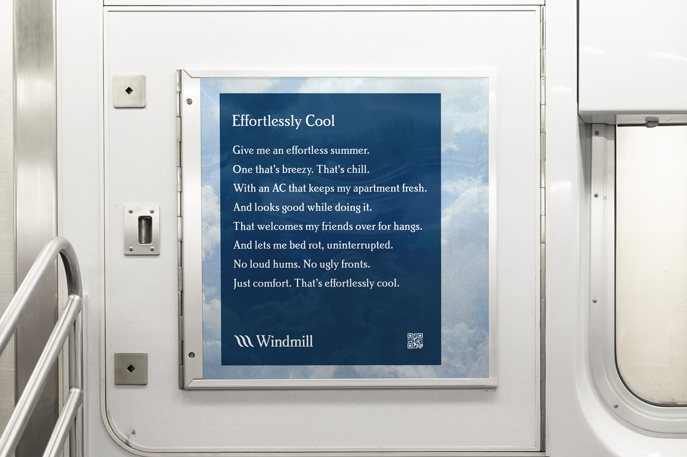
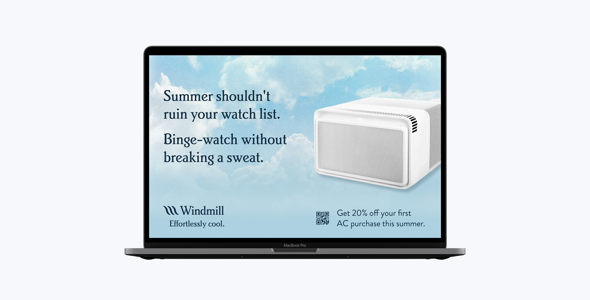
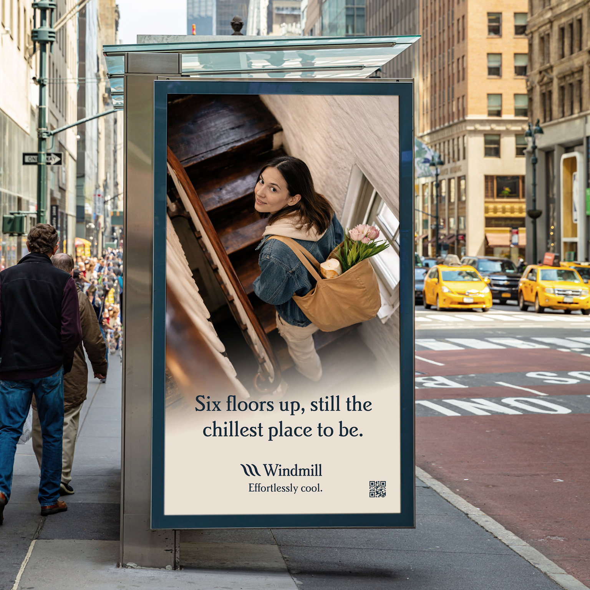
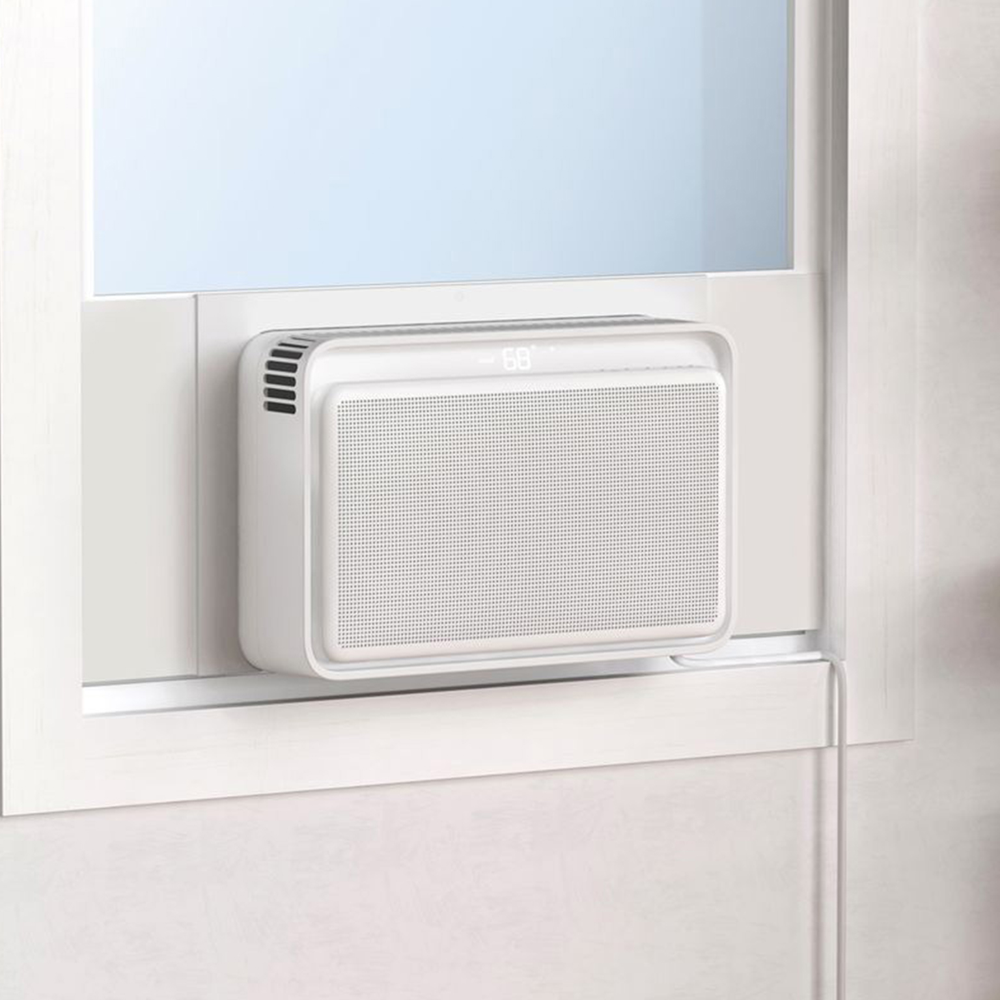
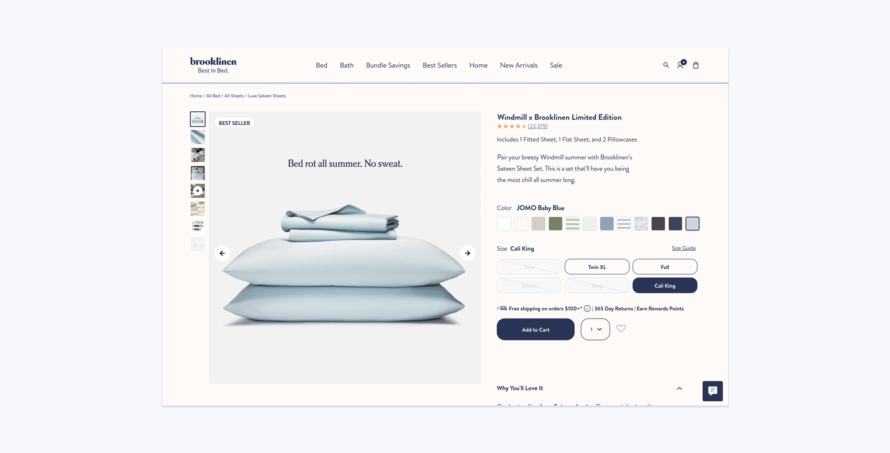
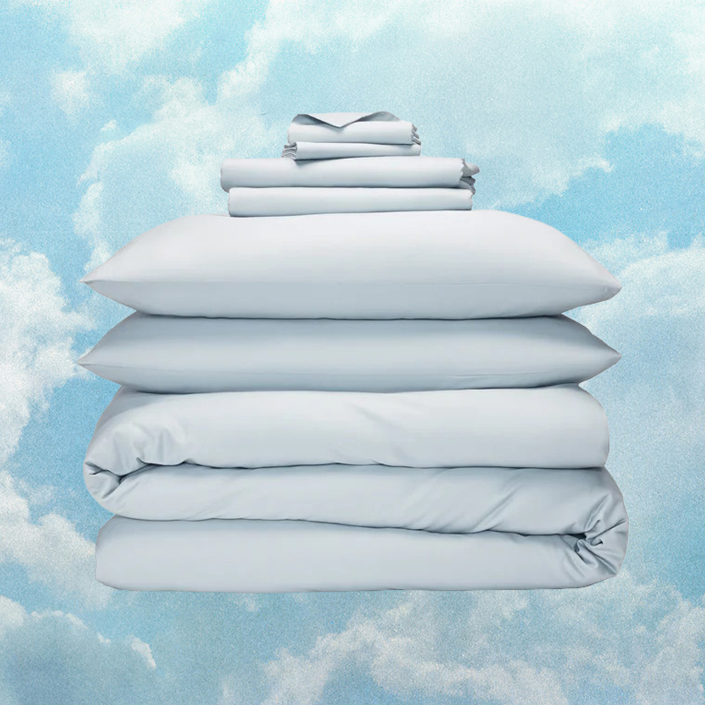
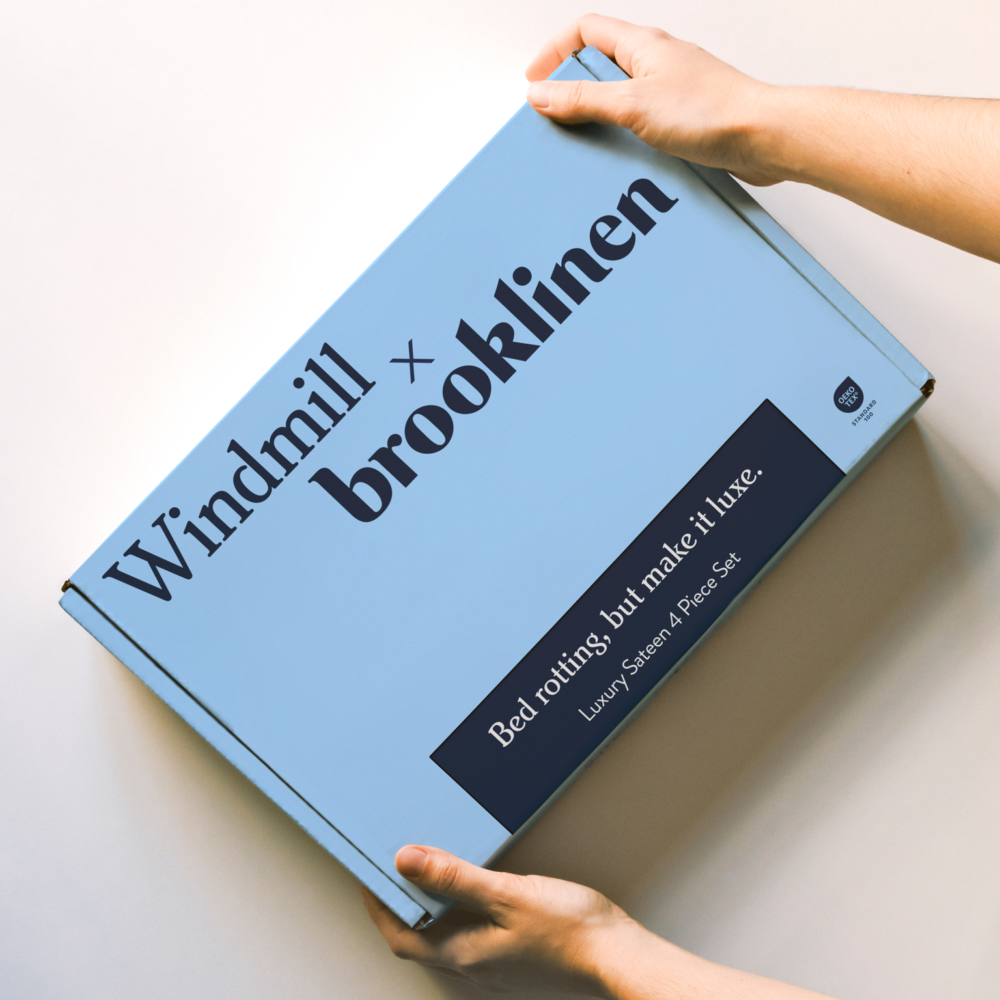
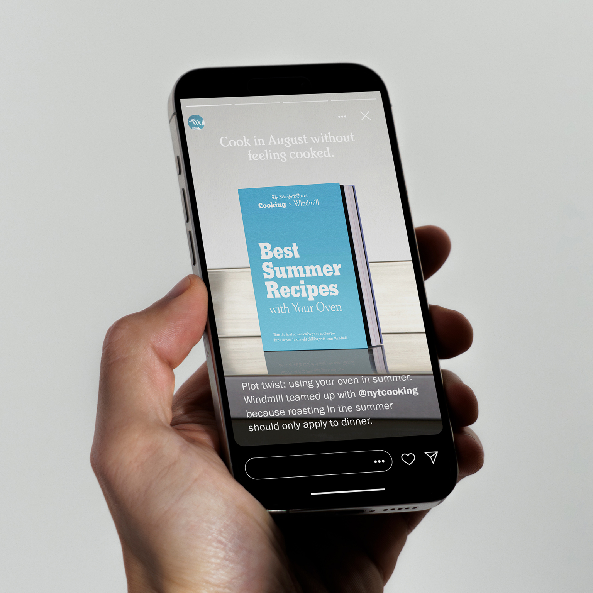
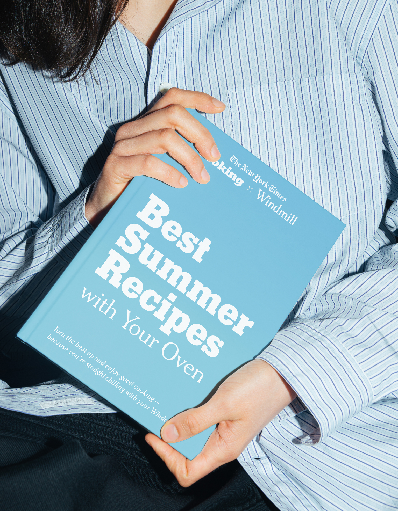

I designed a series of OOH posters, one of them being a nod to the MTA Poetry in Motion posters, so naturally we wrote a poem for the campaign.






We designed this campaign targeting the New York City market, which is why Brooklinen and the NYT were selected as the best pairings for the Windmill brand.


